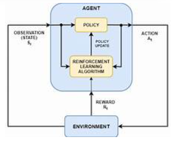

ü߆ What is Deep Q-Network (DQN)?
Deep Q-Network (DQN) is an advanced reinforcement learning algorithm that combines Q-Learning with deep neural networks.
While traditional Q-learning uses a Q-table to store state-action values, DQN replaces this table with a deep neural network to handle environments with large or continuous state spaces.
üìå Why Use DQN?
In many real-world scenarios, it's impractical or impossible to store Q-values for every state-action pair in a table.
DQN uses a neural network to approximate the Q-function, allowing it to generalize across similar states and scale to complex environments like video games or robotics.
üßÆ Core Formula
Where:
- L(θ): Loss function used to update the network
- θ: Parameters of the current Q-network
- θ⁻: Parameters of the target network (periodically updated)
- R: Reward received after taking action
- γ: Discount factor
- s, a, s′: Current state, action taken, and next state
üìä Key Components of DQN
- Experience Replay: Stores past experiences in a replay buffer and trains the model on random batches to break correlations in the data.
- Target Network: A separate neural network used to calculate the target Q-value, updated periodically to stabilize learning.
- Exploration Strategy: Epsilon-greedy is commonly used to balance exploration and exploitation.
üöÄ Applications
- Game playing (Atari, Chess, Go, etc.)
- Autonomous vehicles and robotic control
- Recommendation engines
- Smart grid and energy optimization
- Natural language processing (NLP) tasks with RL
üñºÔ∏è Visualization

Q-function approximated by deep neural networks with experience replay and a target network.
✅ Advantages
- Handles high-dimensional or continuous state spaces
- Improved learning stability with experience replay and target networks
- Generalizes better than tabular Q-learning
⚠️ Limitations
- Training is computationally expensive
- Hyperparameter tuning is critical
- Sample inefficiency — needs many experiences to learn
- Susceptible to catastrophic forgetting without proper replay